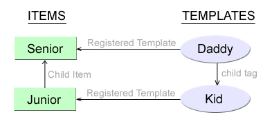
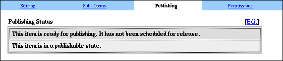
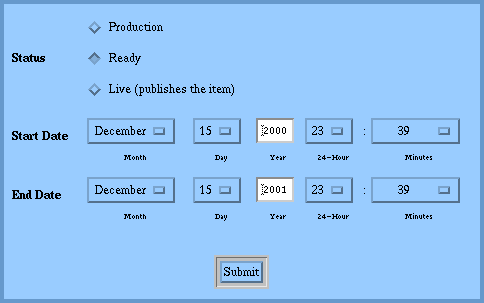

Note: This document links to the automatically generated TCL documentation. You may need to update ATS and regenerate the documentation in order to follow the links.
A typical content item is usually a collection of child items and related items, as shown in the page relation document. Therefore, the template registered to the item has to run multiple SQL queries in order to retrieve and process all of the child / related items. In addition to being cumbersome to write, these queries access the datatbase each time an item is being served, thus slowing down the site. The publishing API in CMS may be used to solve both of these problems.
CMS defines three new ATS tags: child, relation and content. The purpose of these tags is to signify a place in the ADP template for the item where a child item, a related item or the current item's content will be inserted.
The child tag can be used to include a child item in the template for the parent item, similarly to the ATS include tag. The syntax for the child tag is as follows:
<child tag=tag index=n embed args>
| Parameter | Default value | Description |
|---|---|---|
| tag | This parameter is required | Specifies the relation tag to be used when querying for the child item. For more information, see the acs-content-repository documentation, sepcifically the content_type.register_child_type procedure. |
| index | 1 | Specifies the index of the item, starting at 1. The index is based on the order_n of the child relation; the child item with the lowest order_n has index 1, the item with the next lowest order_n has index 2, and so on. |
| embed | no value | Signifies that the child item should be statically embedded in the current item's template. If this parameter is not specified, the child item will instead be referenced dynamically, most likely using the <include> tag. If the embed parameter is specified, the child item may be written to the file system (this is done for images, for example). See the discussion of publishing to the file system below for an explanation of how the embed parameter may be used. |
| args | no value | Specifies extra parameters to be passed to the template, in form name1="value1" name2="value2" .... The syntax for passing these parameters is the same as the syntax for the include tag. |
In order for the child tag to work, the child item must be published. If the child item is not published, or if any other error occurs, the child tag is ignored.
For example, consider the following template:
request create
request set_param color -datatype text -value "#FFFFFF" -optional
content::get_content
template::util::array_to_vars content
<html>
<head><title>@title@</title></head>
<body bgcolor=@color@>
I am a child
<table>
<tr bgcolor=@color@><td>@text@</td></tr>
</table>
</body>
</html>
This template can be used to render a basic item whose context is readable text. The template takes one parameter, color, which is used as the background color for the item. Assume that this template is registered to an item called called "Junior", whose content is "Hello World !".
Now, consider the following template:
content::get_content
template::util::array_to_vars content
<html>
<head><title>@title@</title></head>
<body bgcolor="#FFFFFF">
<h4>The child:</h4>
<child tag=family index=1 embed color="#00FF00">
<h4>The parent:</h4>
@text@
</body>
</html>
This template can be also be used to render a basic item whose context is readable text. In addition, this template assumes that the current item ahs at least one child item, which is related to the current item using the family relation tag. Assume that this template is registered to an item called "Senior", whose content is "Who's your daddy ?". The diagram below shows all the aforementioned relationships:

Assuming that the "Junior" and "Senior" items are both published, the user will see something like this when requesting "senior.acs".
Note that the child item need not be plain text for the child tag to work. In fact, the tag works with images and may be extended to handle any mime type, as is discussed below.
The syntax for the relation tag is almost identical to the syntax of the child tag:
<relation tag=tag index=n embed args>
All the parameters of the relation tag are identical to the parameters of the child tag. The only difference between the two tags is that the child tag handles child items, while the relation tag handles related items.
The content tag accepts no parameters:
<content>
This tag can be used to render the content of the current item. For example, the kid template above can be modified as follows:
<html>
<head><title>@title@</title></head>
<body bgcolor=@color@>
I am a child
<table>
<tr bgcolor=@color@><td><content></td></tr>
</table>
</body>
</html>
Unlike the @text@ variable, however, the content tag may also be used to render images and other mime types. The content tag is treated similarly to the child and relation tags, with the embed parameter always present.
In order to process the relation and child tags, the templating system must perform the following steps:
Retrieve the item_id of the child/related item
Render the child item in some way, based on the item's mime type, possibly performing one of the following tasks:
Merge the item with its template
Write the body of the item to the filesystem
Pass extra parameters to the item
etc...
Insert the rendered child/related item into the parent item
Since content tag renders the content of the current item, it does not need to perform Step 1.
Steps 1 and 3 are performed by the private TCL proc publish::render_subitem. In order to accomplish Step 2, the templating system needs to know how to handle various mime types. This is accomplished through the use of handlers.
A mime-type handler for a mime type (such as "text/plain" or "image/jpeg") is a TCL proc, with the following signature:
proc publish::handle::mime_prefix::optional_mime_suffix { item_id args } {
# Process any additional options passed to the handler
template::util::get_opts $args
# Perform some calculation to get the HTML for the item
#...
# Return the rendered HTML for the item
return $html
}
The handler proc takes in an item_id, and any of the following options:
| Option | Description |
|---|---|
| -embed | Signifies that the embed parameter was specified in the child/relation tag (the embed parameter is implicit in the content tag). In this case, the handler should return the static HTML for the item. If the -embed option is not specified, the handler should insted return some HTML/ADP code which will dynamically include the item in the parent item (using the include tag, for example) |
| -no_merge | Usually, the child/related item is merged with its template in order to produce static HTML. The -no_merge option signifies that the item should not be merged with its template. This option is passed by the content tag, in order to prevent infinite recursion. |
| -revision_id id | Specifies the id of the revision which should be used when rendering the item. If this option is ommitted, the handler is free to use any revision; the live revision is probably the logical choice. |
In order to determine which handler is to be used for rendering a particular item, the publishing API first tries to find a proc with the name publish::handle::mime_prefix::mime_suffix. If no such proc exists, the publishing API looks for a proc named publish::handle::mime_prefix. If this proc does not exist, either, the publishing API gives up and the item is not rendered.
By default, only the handlers publish::handle::image and publish::handle::text exist in CMS.
There are several procs in the publishing API which make it easier to write handlers:
| Proc signature | Purpose |
|---|---|
| publish::merge_with_template | Merge the item with its template and return the resulting HTML block. The same HTML block is shown to the user when the item's URL is accessed on the CMS server. |
| publish::write_content | Publish the content blob of the specified revision by writing it to a file under each of the root directories specified under the PublishRoots parameter in the server's INI file, as described below. If the parameter does not exist, the value of the PageRoot is used as the default. If the PageRoot parameter does not exist, either, the value of [ns_info pageroot] is used. |
| publish::item_include_tag | Create an <include> tag suitable for including the item dynamically. The extra_args parameter is a list of names and values to be passed to the included template, in the same format as the -html option. |
| content::get_content_value | Returns the content of the revision as a TCL string. Do not call this function unless the revision has a textual mime type (such as text/plain, text/html, etc.) |
| publish::handle_binary_file | A helper proc for creating mime handlers for binary mime types; see the example below. Writes the content blob of the item to the filesystem, and attempts to merge the item with its template. If the merge is not possible (or if the no_merge flag was specified), returns an empty string. The -embed flag must be specified for this proc. |
| Any proc in the item namespace | The procs in the item namespace simplify access to many properties of a content item, such as the live revision, the URL, etc. See the item documentation for more information. |
For example, here is the annotated code for the default text handler (found in publish-procs.tcl) :
| Code | Comments |
|---|---|
proc publish::handle::text { item_id args } {
| This is a mime-type handler which will be used for any textual mime-type, unless a more specific mime handler exists. |
template::util::get_opts $args
if { [template::util::is_nil opts(revision_id)] } {
set revision_id [item::get_live_revision $item_id]
} else {
set revision_id $opts(revision_id)
}
| Process the options and determine the revision id to be used when rendering the item. If no revision id is specified, use the live revision. |
if { [info exists opts(embed)] } {
| If the -embed option was specified, render the item as HTML. |
if { ![info exists opts(no_merge)] } {
set code "publish::merge_with_template $item_id $args"
set html [eval $code]
| Unless the -no_merge option is specified, merge the item with its template, using all the options which were passed to the mime handler. |
} else {
set html [content::get_content_value $revision_id]
}
| If the -no_merge option was specified, simply return the content of the revision as a string of text. |
} else {
if { [info exists opts(html)] } {
set extra_args $opts(html)
} else {
set extra_args ""
}
set html [publish::item_include_tag $item_id $extra_args]
}
| If the -embed option was not specified, create an <include> tag to dynamically include the item's template. |
return $html
| All done - return the resulting HTML. |
The handler for binary files is somewhat more complicated, since it needs to write the content blob to the filesystem in addition to merging the item with its template. The publish::handle_binary_file proc simplifies this process, and is used in the default image handler:
| Code | Comments |
|---|---|
proc publish::handle::image { item_id args } {
| This is a mime-type handler which will be used for any image mime-type, unless a more specific mime handler exists. |
template::util::get_opts $args
set html [eval publish::handle_binary_file \
$item_id revision_id url error_msg $args]
|
Attempt to handle the image automatically.
After the eval returns, the following variables will exist
in the calling frame:
|
if { ![template::util::is_nil error_msg] } {
ns_log notice "WARNING: $error_msg"
return ""
}
|
If some kind of error has occurred, log the
error and fail silently. Currently, handle_binary_file
fails under any of the following conditions:
|
if { ![template::util::is_nil html] } {
return $html
}
| If the item was successfully merged with its template, return the resulting HTML. It is possible, however, that -no_merge flag was specified, or the item has no associated template. This is not an error condition, since the item can still be rendered in some way. |
template::query image_info onerow "
select
im.width, im.height, r.title as image_alt
from
images im, cr_revisions r
where
im.image_id = :revision_id
and
r.revision_id = :revision_id
" -cache "image_info $revision_id"
template::util::array_to_vars image_info
| The item could not be merged with its template. Read the image width, height and title, and output a custom <img> tag. |
if { [info exists opts(html)] } {
set extra_html [publish::html_args $opts(html)]
set have_alt [expr [lsearch \
[string tolower $opts(html)] "alt"] >= 0]
} else {
set extra_html ""
set have_alt 0
}
set html "<img src=$url"
if { ![template::util::is_nil width] } {
append html " width=\"$width\""
}
if { ![template::util::is_nil height] } {
append html " height=\"$height\""
}
append html " $extra_html"
if { !$have_alt } {
append html " alt=\"$image_alt\""
}
append html ">"
| Create an <img> tag which references the URL where the image was written to the filesystem. Use the image attributes for the width and height; use the image title for the alt text, unless an alternate alt text string was passed in to the handler. Append any other HTML arguments at the end of the <img> tag. |
return $html
| All done - return the resulting HTML. |
While the default mime-type handlers are not very sophisticated, they are flexible. Mime-type handlers for handling streaming video, audio, Flash, etc., could be easily written by using the publishing API, and by following the design patterns shown above.
Note that, as with any CMS extensions, custom mime-type handlers should probably placed in a separate TCL file. This way, if and when publish-procs.tcl is updated, the upgrade process will be painless.
Since it is possible to generate static HTML for the entire item in CMS, it is also possible to write the resulting HTML to the filesystem, producing a static page which requires no special parsing and no database hits. Such a page could be served much faster than the dynamic ACS template for the item.
The publish::publish_revision proc could be used to accomplish this. The proc takes an revision_id as an argument, and writes the specified revision to the filesystem. The filename of the resulting file consists of three parts:
/root_path/item_url.file_extension
root_path - The file will be written to each path returned by publish::get_publish_roots proc. The proc attempts to retrieve the list of publish roots as follows:
From the PublishRoots parameter in the server's INI file, under the section [ns/server/your_server_name/cms]. The value of this parameter should be a space-separated list of directories. For example:
[ns/server/my-cms-server/cms]
PublishRoots=/web/my-cms-server/www /web/my-public-server/www /home/my-files
If the PublishRoots parameter does not exist, the proc attempts to publish to the page root specified under the PageRoot parameter in the same config section.
If the PageRoot parameter does not exist, the proc use the page root of the server as returned by [ns_info pageroot].
item_url.file_extension - The value returned by item::get_extended_url. The value combines the relative URL of the item as returned by item::get_url, and a file extension based on the template which is registered to the item. Note that, by default, get_extended_url uses the item's mime-type to determine the extension; however, publish_revision overrides this behavior by specifying the -template_url option. If there is no template registered to render the item, the file extension is assumed to be ".html"
For example, assume that the following template is registered as the default template for the image content type:
content::get_content
template::util::array_to_vars content
<html>
<head><title>@title@</title></head>
<body>
<h2>@title@</h2>
@publish_date@ : @mime_type@
<p>
@description@
<p>
<content>
</body>
</html>
In addition, assume that an image item exists in CMS under "Sitemap/images/my_snail"; that the server is called "myserver"; and that the PublishRoots parameter is set to "/web/my-cms-server/www /web/my-public-server/www". When the item is published to the filesystem, the following four files will be created:
/web/my-cms-server/www/images/my_snail.jpg - written by the image handler
/web/my-public-server/www/images/my_snail.jpg - written by the image handler
/web/my-cms-server/www/images/my_snail.html - written by publish_revision
/web/my-public-server/www/images/my_snail.html - written by publish_revision
The my_snail.jpg file will contain the actual JPEG image (presumably, an image of a snail), and the my_snail.html image will contain HTML code similar to the following:
<html>
<head><title>My Snail</title></head>
<body>
<h2>My Snail</h2>
12/15/2000 : image/jpeg
<p>
Watch my snail frolick happily !
<p>
<img src=/images/my_snail.jpg width="640" height="480" alt="My Snail">
</body>
</html>
In CMS, the publish_revision proc is called each time the item's publish status is changed to "Live". In order to be published, the item must satisfy the following requirements:
A live revision exists for the item
If a workflow exists on the item, the workflow must be in the Finished state.
If there are any child or item relationships registered to the item, the min_n and max_n constraints of these relationships must be satisified.
Assuming that these constraints are satisfied, the following panel will appear under the Publishing tab for the item:

The Edit link in the upper-right corner links to the Edit Publishing Status dialog:

If the user changes the status to "Live" and clicks Submit, the item will be published to the filesystem. Note that any further changes to the item will not be automatically reflected in the filesystem; the user must set the status to "Live" each time he/she wishes to re-publish the item.
If the status is already "Live", and the user changes it to "Production", "Ready" or "Expired", the item will be unpublished using the publish::unpublish_item proc, which will remove any files that were written when the item was published. Note that this proc is not recursive; the child/related items of the unpublished item will remain live.
The Edit Publishing Status dialog also contains two additional fields, "Start Date" and "End Date". These fields may be used to schedule the item for future publication and expiration (the default expiration date is one year in the future). The publish::schedule_status_sweep proc can be used to schedule regular sweeps of the entire content repository for items which must be published or expired. The proc accepts an optional interval parameter, which sets the time interval between sweeps in seconds. This interval can also be controlled by the StatusSweepInterval in the server's INI file; the default value is 3600 (one hour). The last line of publish-procs.tcl is in fact
publish::schedule_status_sweep
Thus, the status sweep is always scheduled at server startup, using the time interval specified in the INI file. Use caution when specifying the time interval: the status sweep may potentially examine all items in the content repository, thus consuming most of your server's CPU time. While lower values of StatusSweepInterval provide more precise control over the publishing and expiration dates of the item, they run the risk of slowing the server down to a crawl.
The publish::unschedule_status_sweep proc (no parameters) may be used to unschedule the regular status sweeps.
The child, relation and content tags (defined in publish-procs.tcl provide a mechanism for embedding child/related items directly in the HTML body of the parent item. While textual and image items are automatically handled by CMS, custom handlers should be used to render other mime types. Content items can be published to the filesystem in order to maximize performance; in addition, items can be scheduled for publication and expiration using the CMS UI.